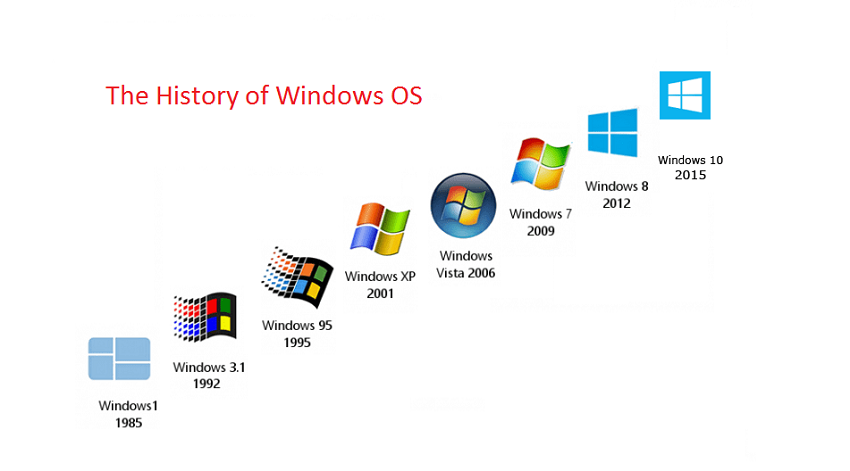
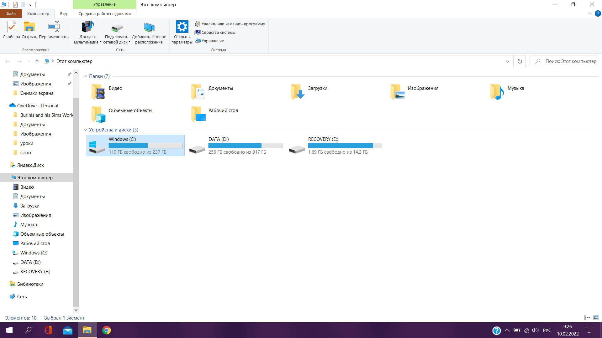

Разделы урока
Введение
Windows - операционная система, разработанная корпорацией Microsoft, которая сыграла ключевую роль в истории персональных компьютеров. С момента своего первого выпуска в 1985 году Windows стала широко используемой платформой благодаря своей удобной интерфейсной оболочке, разнообразным функциям и поддержке широкого спектра аппаратного оборудования. С течением времени Windows постоянно эволюционировала, проходя через различные версии, внедряя новые технологии и улучшая пользовательский опыт. Сегодня Windows остается одной из самых распространенных операционных систем как на персональных компьютерах, так и на устройствах сенсорного ввода, предоставляя пользователям мощные инструменты для работы, обучения и развлечений.

Видео-урок
История
История Windows берет свое начало в середине 1980-х годов, когда Microsoft, основанная Биллом Гейтсом и Полом Алленом, решила разработать собственную операционную систему для персональных компьютеров. Первая версия Windows, Windows 1.0, была выпущена в ноябре 1985 года. Она предоставляла графический интерфейс пользователя (GUI) поверх операционной системы MS-DOS и включала базовые приложения, такие как калькулятор и блокнот. Следующие версии Windows (2.0, 3.0 и 3.1) внесли улучшения в интерфейс и функциональность, а Windows 3.11 уже стала популярной в корпоративной среде. Однако настоящий прорыв произошел с выпуском Windows 95 в 1995 году. Эта версия внедрила значительные изменения, такие как Панель задач, Пуск, и поддержка для 32-битных приложений.
Windows 98 и Windows ME последовали, внося свои улучшения, но настоящая революция произошла с выпуском Windows 2000 и Windows XP, предоставивших более стабильную и мощную операционную систему. Windows XP оставалась широко используемой и любимой версией долгие годы. Серия операционных систем Windows продолжала развиваться, включая Windows Vista, Windows 7, Windows 8 и 8.1, и наконец, Windows 10, выпущенную в 2015 году. Windows 10 внесла современные функции, улучшенную безопасность и облаковые сервисы, а также предложила бесплатное обновление для пользователей предыдущих версий. Windows также стала не только операционной системой для настольных компьютеров, но и расширила свою поддержку на различные устройства, такие как ноутбуки, планшеты, смартфоны и даже консоли Xbox. История Windows является историей постоянного развития и адаптации к изменяющимся потребностям пользователей и технологий.
Применение
Windows является самой популярной операционной системой для домашних и рабочих ПК. Это обусловленно простотой использования, широкой поддержкой аппаратного обеспечения и большой бибилиотекой доступных программ. Также существует серверная версия - Windows Server, которая предназначена для использования веб-сервером. Помимо этого, Windows является самой популярной ОС для видеоигр. Практически все игровые ПК и игровая консоль Xbox используют Windows. Начиная с Windows 8, Microsoft сделали большую работу для поддержки устройств с сенсорным вводом - ноутбуки-трансформеры, сенсорные дисплеи, планшеты.
Файловая система
В Windows используется файловая система в виде "дисков", которые разделяют накопитель на части. Такая файловая структура позволяет отделить системные файлы, необходимые для работы ОС, от файлов пользователя. Внешние накопительные устройства также подключаются в виде "дисков". Подобная файловая система является уникальной среди современных ОС, потому-что остальные ОС унаследовали файловую систему UNIX, о чем будет сказано в последующих главах
Тест
Тест
Какая компания разработала Windows?
В каком году произошел первый выпуск Windows?
В 1995 году вышла значимая версия Windows - ...
Начиная с какой версии Windows началась большая поддержка устройств с сенсорным вводом?
Какой файловой системой пользуется Windows?